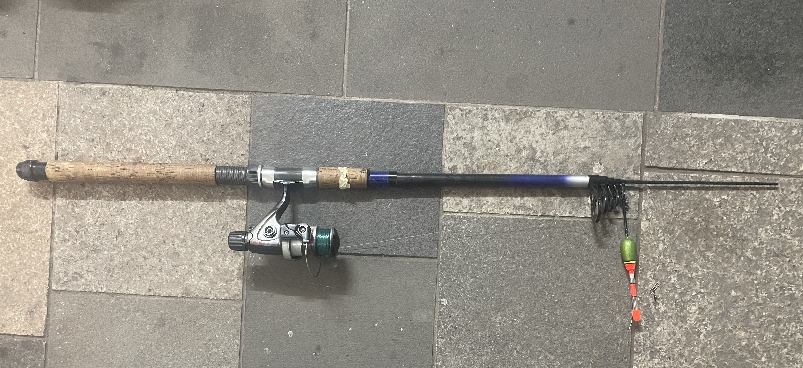

Länge: 2,85 m
Wurfgewicht: 10–30g
Einsatz: Spinnfischen
Notizen: Teleskopenrute, Spitze abgebrochen

Länge: 2,85 m
Wurfgewicht: 10–30g
Einsatz: Spinnfischen
Notizen: Teleskopenrute, Spitze abgebrochen

Länge: 2,13 m
Wurfgewicht: 7-21g
Einsatz: Spinnfischen
Notizen: Neu

Länge: 2,70 m
Wurfgewicht: 20-60g
Einsatz: Spinnfischen
Notizen: Gebraucht, noch nicht gekauft